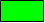

システムエディタ（RTC の表示 / 描画編集 編）

✏️ Edit this page on GitHub
#contents
RTC の表示と RTC の描画編集の操作を説明します。
&aname(RTCcolor);
RTC の表示
システムエディタに配置された RTC は矩形で表示され、ポートはその矩形の周りに表示されます。また、それぞれの状態が色で表現されます。

アイコンと状態色の一覧は以下のとおりです。
| No. | 名前 | 形状 | 状態 | デフォルト色（※） | |
|---|---|---|---|---|---|
| １ | RTC | CREATED |  |
White | |
| INACTIVE |  |
Blue | |||
| ACTIVE |  |
Light Green | |||
| ERROR |  |
Red | |||
| UNKNOWN |  |
Black | |||
| 2 | Execution Context （1番目のみ） |
（RTCの矩形の外周線） | RUNNING | Gray | |
| STOPPED | |
Black | |||
| 3 | InPort | 未接続 | |
Blue | |
| 接続済（1つ以上） | Light Green | ||||
| 4 | OutPort | 未接続 | |
Blue | |
| 接続済（1つ以上） | Light Green | ||||
| 5 | ServicePort | 未接続 |  |
Light Blue | |
| 接続済（1つ以上） |  |
Cyan | |||
{kind=link}
{kind=link}
{kind=link}
{kind=link}
{kind=link}
{kind=link}
‘※各状態の色は、設定画面の 表示色 にて変更することができます。’
また、RTC の種別やカテゴリに合わせてアイコン画像をつけることができます。
{kind=link}
‘※アイコン画像は、設定画面の アイコン にて変更することができます。’
RTC の同期
システムエディタへ配置した RTC の状態を監視し、リアルタイムに表示を更新します。
監視方法には状態通知オブザーバ方式（OpenRTM-aist 1.1以降）、もしくはポーリングによる周期チェックがあり、設定画面の接続にて監視パラメーターを変更することができます。
システムエディタへ RTC を配置するときに、ミドルウェアのバージョンをチェックし、オブザーバ対応であれば RTC へオブザーバを登録します。オブザーバ未対応の場合は周期的に状態の問い合わせを行います。

システムエディタから RTC を削除すると、オブザーバも解除します。
状態通知オブザーバが通知する内容は次のとおりです。
| 通知 | 説明 |
| COMPONENT_PROFILE | RTC のコンポーネントプロファイルに変更があった場合に通知 |
| RTC_STATUS | RTC の状態 新しい状態と対象となる EC の ID を通知 |
| EC_STATUS | 実行コンテキストの状態 実行レートの変更、EC の開始/停止、RTC のアタッチ/デタッチを通知 |
| PORT_PROFILE | ポートの状態 ポートの追加/削除、コネクションの接続/切断を通知 |
| CONFIGURATION | コンフィグレーションの状態 コンフィグレーションの追加/変更/削除、アクティブなコンフィグレーションの切り替えを通知 |
また、RTC の生存確認のため、一定間隔でハートビートを通知します。
ハートビートが一定回数通知されないと、RTC が異常終了したとみなしてシステムエディタ上から削除します。
RTC の描画編集
ここでは、RTC の描画編集について説明していきます。(「編集」ではなく「描画編集」とあえてしているのは、ここで説明される作業は描画の編集であり、システムに対する影響は全くないためです。)
- RTC の大きさの変更と移動（システムに対する影響なし)~
RTC を移動するには、RTC を選択後、ドラッグして動かします。 RTC の大きさを変更するには、 RTC を選択することで表示されるハンドルをドラッグして動かします。

また、選択された RTC の位置と大きさがステータスバーに表示されます。
{kind=link}
- RTC の回転（システムに対する影響なし）~
対象のコンポーネントを選択し、Ctrlキーを押しながらマウスの右ボタンをクリックすることで、水平の向きへ回転します。Shiftキーを押しながらマウスの右ボタンをクリックすることで、垂直の向きへ回転します。それぞれ同じ操作を繰り返し行うことで逆の水平の向き、逆の垂直の向きへ変更でき、上下左右の向きへ操作することができます。
{kind=link}
- RTC の削除（システムに対する影響なし）~
RTC を削除するには、RTCを選択し [Delete] ボタンをクリックするか、コンテキストメニューから [Delete] を選択してください。
{kind=link}
- ポート間の接続線を移動する（システムに対する影響なし）~
接続線を移動するには、接続線を選択し表示されるハンドラを移動します。垂直線は左右に、水平線は上下に移動することができます。
{kind=link}